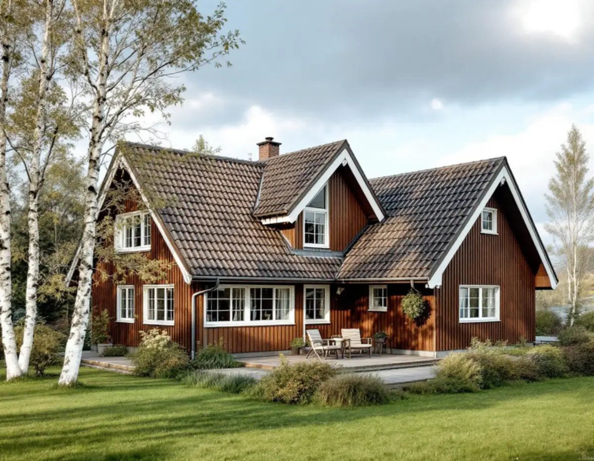
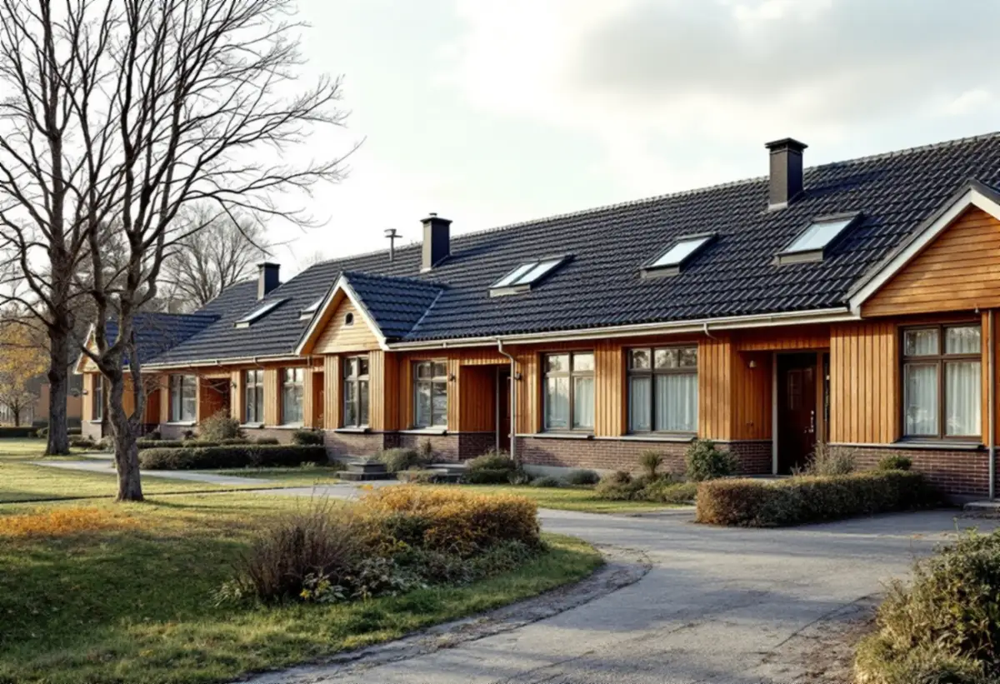

Ta reda på husets epok
Vi börjar med byggår och ritningar, gärna från kommunens arkiv, så att vi vet om taket hör till en stationsvilla, ett 1970-talshus eller ett grupphusområde.
En takrenovering i Täby handlar oftast om att byta det som ligger under pannorna – underlagspapp, läkt och plåt – och att behålla takets form. Täby kommuns riktlinjer säger att befintliga takformer, takmaterial och takfotens utformning bör behållas, och det styr hur vi lägger upp arbetet på allt från 1920-talsvillor i Näsbypark till radhuslängor i Täby kyrkby.

Täbys äldsta villor ligger vid Roslagsbanans stationer. Mellan 1907 och 1920 byggdes ett åttiotal villor i Roslags-Näsby, i Viggbyholm började tomter styckas av när hållplatsen öppnade 1903, och i det som kallades Täby Villastad vid kyrkbyn stod omkring 250 villor klara före första världskriget. Husen har ofta sadeltak eller brutna tak, ibland utsvängda nedtill, täckta med tegel eller plåt.
Näsbypark och Lahäll marknadsfördes först som områden för sommarstugor. År 1933 var redan över 200 tomter bebyggda i Näsbypark, och här finns allt från en vitputsad villa från 1926 med lätt utsvängt tegeltak till funkisvillor från 1940-talet med låga takfall som inte syns från gatan. Gribbylund började också som sommarstugetomter och består i dag mest av typhus från 1970- och 1980-talen, med flera radhus- och kedjehusområden.
Efterkrigstiden gav Täby grupphusen. Norskogen i Näsbypark (1957–59) har flacka tak, och i Täby kyrkby byggdes radhusområdena Midgård (1972–73) och Miklagård (1975–76). Det är tre helt olika tak att renovera, och därför börjar vi med att ta reda på vilken epok huset tillhör.

På de äldre villorna i Roslags-Näsby, Viggbyholm och Näsbypark är tegel vanligast. Själva teglet håller ofta länge, men underlagspappen, läkten och plåten vid takfot och skorsten är från en senare omläggning eller ännu äldre. Ett utsvängt nedre takfall, som på flera 1920-talsvillor, ställer krav på hur fotplåt och första pannraden läggs.
Från 1960-talet kommer betongpannorna in. Kommunens underlag visar till exempel en villa i Täby kyrkby från 1962 med svarta betongpannor och radhuslängorna i Miklagård med röda betongpannor och två takkupor per lägenhet. Betongpannor tappar med åren sin ytbehandling och blir porösa, och runt kuporna finns många plåtanslutningar som kan släppa in vatten.
De låga taken är en egen kategori. Funkisvillorna, Norskogens flacka tak och Midgårds flacka pulpettak med takband har ofta papp eller plåt, och där är det tätskiktet, takbandet och avvattningen som avgör livslängden. Mer om materialens hållbarhet finns i takmaterialens livslängd.
Näsbypark ligger i Täbys sydöstra hörn mot Stora Värtan, och Viggbyholms trädgårdsstad planerades på höjderna ner mot samma fjärd. Hus med öppet läge mot vattnet får mer vind och slagregn än villorna längre in, så där kontrollerar vi särskilt nockpannor, vindskivor och hur plåten är fäst.
Samtidigt är stora delar av Täby gröna. Näsbypark beskrivs som villaområden med stora lummiga trädgårdar, Lahäll byggdes i det skogsklädda höjdpartiet vid Näsbyviken och i Roslags-Näsby finns en björkallé längs Sågtorpsvägen. Skuggiga takfall med löv och barr i rännorna ger mossa och fukt vid takfoten. Läs mer om mossa på taket.
Sedan 1 december 2025 krävs normalt inget bygglov för att byta taktäckningsmaterial eller kulör på ett en- eller tvåbostadshus. Täby kommun skriver på sin sida om fasadändring att det inte behövs bygglov om byggnaden inte är särskilt värdefull, inte ligger i ett särskilt värdefullt område och inte har utökad lovplikt i detaljplanen. Höjs taket kan det räknas som tillbyggnad, så stäm av med kommunen innan takets form eller höjd ändras. Boverket beskriver samma regler, inklusive skyddsbestämmelser i detaljplan och områdesbestämmelser.
Kommunen har också antagit Kulturmiljöer i Täby, ett kunskapsunderlag med riktlinjer som inte är juridiskt bindande men används i kommunens bedömningar. För småhusområden anges att befintliga takformer, takmaterial och takfotens utformning bör behållas. Näsby slott är byggnadsminne, och där krävs Länsstyrelsens tillstånd för ändringar som strider mot skyddsbestämmelserna. Är du osäker på vad som gäller din fastighet hjälper vi dig att ta fram underlag, och mer om reglerna finns på bygglov vid takbyte.
I grupphusområdena bygger värdet på helheten. Kommunens riktlinjer för grupphusområden säger att det tidstypiska uttrycket ska hållas samman och att takformer, takmaterial och takfot bör behållas, även vid tillbyggnader som carport och altan. Kvarteret Ankaret vid Näsby slott, en radhusrad från 1968, fick platta tak just för att inte synas från slottet.
Därför lönar det sig ofta att renovera en hel länga i samma omgång. Pannor, nockar och plåtdetaljer blir lika, och anslutningarna mellan husen görs om samtidigt i stället för i skarvar år efter år. Förvaltas området gemensamt behöver föreningen eller grannarna vara överens om material och kulör innan vi börjar.
På en tegelvilla i Näsbypark eller Roslags-Näsby lyfter vi ner teglet, sorterar bort skadade pannor och lägger ny underlagspapp och ny läkt. Är råsponten mjuk vid takfoten eller kring skorstenen byter vi de partierna. Sedan läggs teglet tillbaka, kompletterat med likvärdiga pannor, och takfoten får samma utformning som tidigare.
På ett betongpannetak från 1960–70-talen avgör skicket på pannorna om de kan återanvändas, eller om det är bättre med nya pannor i samma form och kulör. Kring takkuporna i Miklagård och liknande områden byter vi plåten runt kupan, ränndalarna och fotplåten. På låga tak med papp eller plåt handlar renoveringen om tätskikt, takband och att vattnet leds bort. Platta tak har en egen sida.
På alla tak ser vi över hängrännor och stuprör, skorstensplåten och ventilationen vid takfoten så att vinden hålls torr. Vill du veta mer om oss som takläggare i Täby eller om metoden i stort, läs om takrenovering.
Vi börjar med byggår och ritningar, gärna från kommunens arkiv, så att vi vet om taket hör till en stationsvilla, ett 1970-talshus eller ett grupphusområde.
Vi går igenom pannor, underlag, plåt och vind och fotograferar det vi ser. Läs mer om takbesiktning.
Vi kontrollerar om huset finns i Kulturmiljöer i Täby eller har bestämmelser i detaljplanen innan vi föreslår material.
Tegel ersätts med tegel och betongpannor med pannor i samma form och kulör, och takfoten byggs som förut.
På radhus samordnar vi arbetet så att plåt och anslutningar mellan husen blir lika.
Rännor, stuprör och skorstensplåt monteras, och du får en genomgång av vad som är gjort.
Rotavdraget gäller arbetskostnaden: 30 procent, högst 50 000 kronor per person och år, och tillsammans med rutavdrag högst 75 000 kronor. Material och resor ger inget avdrag. Vi drar av beloppet direkt på fakturan, och äger ni huset tillsammans kan ni fördela avdraget mellan er.
Renoverar flera grannar i en radhuslänga samtidigt gäller avdraget för var och en som äger sitt hus och bor där. Varje ägare får en egen faktura för sitt tak. Läs mer om rotavdrag för takarbete.
Kostnaden i Täby styrs främst av vilken typ av tak det är: ett brant tegeltak med utsvängd takfot kräver mer hantverk än ett rakt betongpannetak, och kupor, ränndalar och skorstenar lägger till plåtarbete. Om pannorna kan återanvändas och hur mycket råspont som behöver bytas avgör också. Se vad som påverkar priset i vad kostar en takrenovering eller räkna på ditt tak i kalkylatorn.
Takbyte, besiktning och plåtarbeten.
Takläggare i Täby →Så fungerar en omläggning.
Takrenovering och takomläggning →Det här styr priset.
Vad kostar en takrenovering? →Räkna på takytan och ROT.
Takbyte-kalkylator →Djursholm, Stocksund och Enebyberg.
Takrenovering i Danderyd →Villaområden och gårdar.
Takrenovering i Vallentuna →Norrviken, Tureberg och Edsberg.
Takrenovering i Sollentuna →